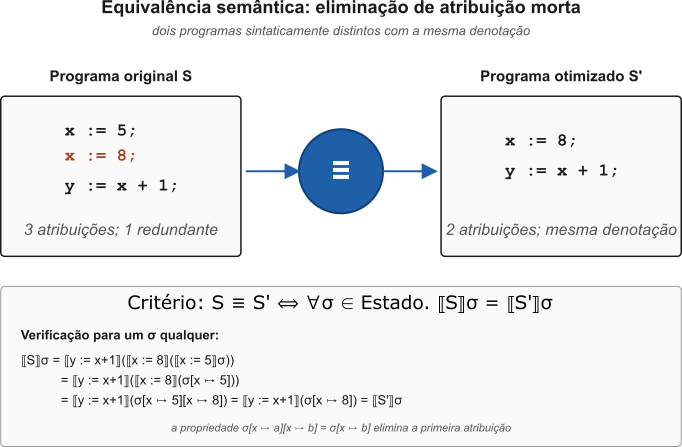
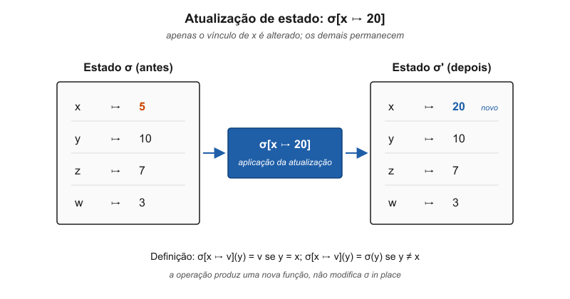
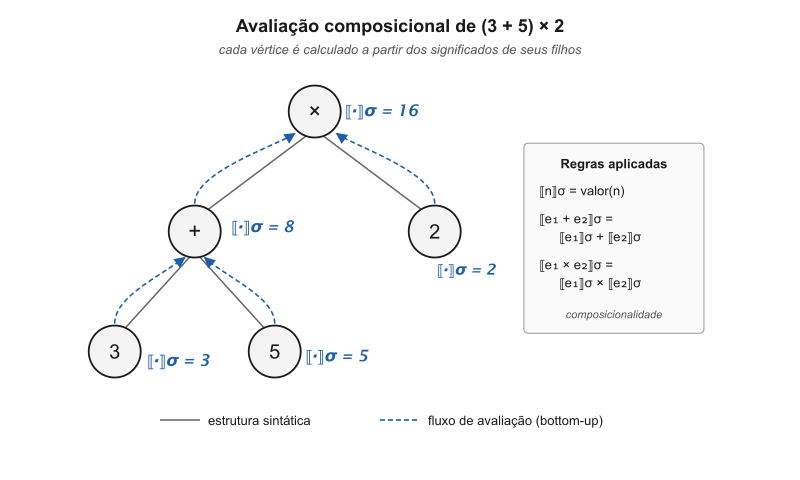
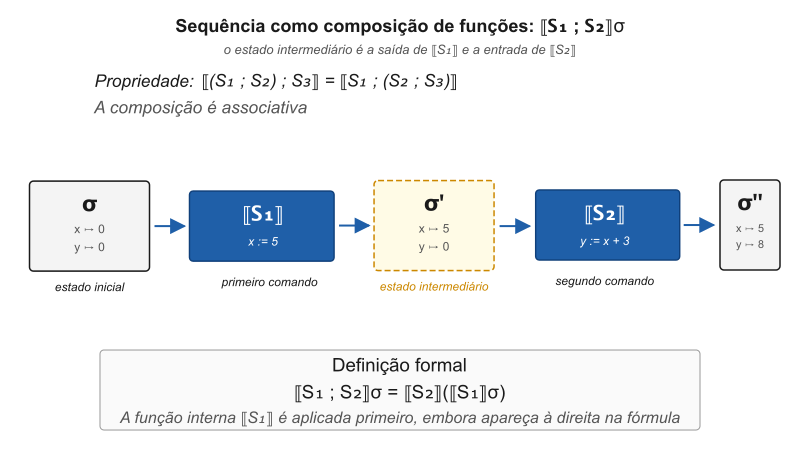
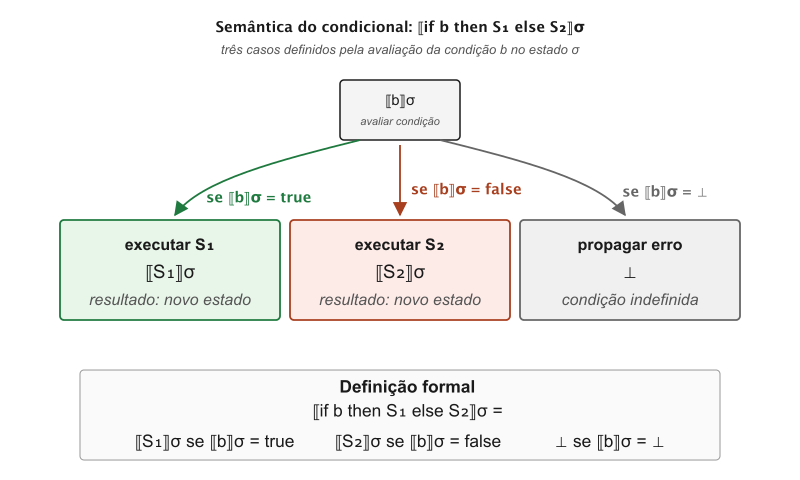

flowchart LR Sintaxe["Programa fonte"] Operacional["Semântica operacional<br/>passos de execução"] Axiomatica["Semântica axiomática<br/>pré e pós-condições"] Denotacional["Semântica denotacional<br/>funções sobre estados"] Propriedades["Propriedades do programa<br/>correção e equivalência"] Sintaxe --> Operacional Sintaxe --> Axiomatica Sintaxe --> Denotacional Operacional --> Propriedades Axiomatica --> Propriedades Denotacional --> Propriedades
13 Fundamentos Matemáticos da Semântica
Para entender como a análise semântica funciona, precisamos primeiro compreender o que significa o termo semântica no contexto das linguagens de programação. Como disse antes, a semântica é o estudo do significado dos programas, ou seja, o que um programa faz quando é executado. Diferente da sintaxe, que se preocupa com a forma e a estrutura do código, a semântica lida com o comportamento e os efeitos do código. Considere o seguinte fragmento de código:
int x = 10;
int y = x + 5;
while (y > 0) {
y = y - 1;
x = x * 2;
}Um analisador sintático confirma que o código está bem formado segundo a gramática da linguagem. Mas questões fundamentais permanecem:
- O que significa executar este código?
- Qual será o valor final de
x? - Como garantir que dois compiladores diferentes produzirão o mesmo resultado?
- Como provar que uma otimização não alterará o comportamento do programa?
A semântica denotacional fornece respostas matemáticas rigorosas para todas essas questões.
Esta seção mergulha fundo na teoria matemática que formaliza o conceito de significado. Para a leitora focada na implementação, os conceitos de Gramáticas de Atributos e o Catálogo de Verificações são o ferramental prático essencial. Para aquela que deseja compreender a ciência por trás da engenharia de compiladores e as garantias de correção que ela nos dá, esta seção é fundamental.
13.1 As Três Abordagens Semânticas
Existem três formas principais de definir formalmente o significado de um programa de computador, cada uma com uma perspectiva e um propósito distintos. Elas não são excludentes, mas sim ferramentas diferentes para responder à pergunta fundamental: o que este código realmente significa?.
Semântica Operacional: a semântica operacional descreve o significado de um programa em termos de como ele é executado, passo a passo. A principal pergunta que ela responde é: Como a computação acontece?. Pense nela como um manual de instruções detalhado para uma máquina abstrata. Ela define um conjunto de regras de transição que especificam como os comandos alteram o estado, a memória, do programa em cada etapa.
Por exemplo, para a expressão
(2 + 3) * 4, a semântica operacional definiria regras que a transformariam primeiro em5 * 4e, em seguida, no resultado final20. Por ser tão próxima do processo de execução, essa abordagem é extremamente útil para a implementação de interpretadores e para a depuração passo a passo, pois fornece um modelo claro de como um programa se comporta ao longo do tempo.Semântica Axiomática: a semântica axiomática adota uma abordagem mais declarativa, focada em provar propriedades sobre o programa. Em vez de descrever como executar, ela define o que pode ser afirmado como verdadeiro antes e depois da execução de um trecho de código. A pergunta que ela responde é: O que este programa realiza?.
Ela é baseada na Lógica de Hoare e utiliza asserções lógicas conhecidas como pré-condições e pós-condições. Uma tripla de Hoare \(\{P\} C \{Q\}\) afirma que, se a pré-condição \(P\) for verdadeira antes de executar o comando \(C\), então, após sua conclusão, a pós-condição \(Q\) será verdadeira. Por exemplo,
{x > 0} y = x * 2 {y > 0}. Essa abordagem não se preocupa com os passos intermediários da execução, apenas com a validade do resultado final. Por isso, é a base para a verificação formal de programas, permitindo provar matematicamente que um software está correto e livre de certos tipos de bugs, como divisões por zero ou acesso a memória inválida.Semântica Denotacional: a semântica denotacional oferece a visão mais abstrata. Ela define o significado de um programa mapeando suas construções sintáticas, comandos, expressões, diretamente para objetos matemáticos, como funções e conjuntos. A pergunta que ela responde é: Qual é a essência matemática deste programa?.
Nesta abordagem, um comando como
y = x + 1não é visto como uma sequência de passos de execução, nem como uma relação lógica, mas sim como uma função matemática que transforma um estado de entrada, o valor de todas as variáveis antes do comando, em um estado de saída. A grande vantagem é a composicionalidade: o significado de um programa complexo é construído a partir do significado de suas partes menores. Ao abstrair completamente os detalhes da implementação, a semântica denotacional é fundamental para a análise e a otimização em compiladores. Ela permite provar que duas construções de código diferentes são equivalentes, pois denotam a mesma função matemática, e, portanto, uma pode ser substituída pela outra, justificando transformações de código que melhoram o desempenho sem alterar o comportamento do programa.
Existe uma pergunta que deve estar incomodando a curiosa leitora: qual tipo de semântica formal é utilizada por compiladores industriais como GCC, LLVM e MSVC? A resposta direta é que eles não implementam uma semântica formal (denotacional, axiomática ou operacional) de maneira explícita e rigorosa. Em vez disso, a abordagem deles é guiada por um pragmatismo de engenharia, fundamentado em uma especificação informal que se assemelha em espírito à semântica operacional.
O significado de uma linguagem como C++ ou C é definido por um padrão, um documento extenso em linguagem natural que descreve o comportamento de uma máquina abstrata. O trabalho do compilador é traduzir o código fonte para um código de máquina que se comporte de acordo com as regras dessa máquina abstrata. As otimizações são validadas não por provas matemáticas formais, mas por um raciocínio rigoroso de que elas preservam o comportamento observável do programa, conforme definido no padrão.
A escolha por não usar uma semântica denotacional completa no backend desses compiladores se deve a razões práticas e fundamentais:
- Complexidade das Linguagens Reais: linguagens como C++ possuem uma especificação com mais de 1.400 páginas, cheia de casos especiais, comportamento indefinido e interações complexas. Modelar tudo isso em uma semântica denotacional seria um esforço hercúleo, provavelmente resultando em uma especificação matemática tão complexa quanto o próprio compilador.
- Pragmatismo e Desempenho: a prioridade de um compilador industrial é gerar código rápido e compilar de forma eficiente. Algoritmos de otimização, mesmo que inspirados em princípios formais, são implementados como heurísticas e transformações eficientes, não como a busca por pontos fixos em domínios matemáticos, que seria computacionalmente inviável.
- Cultura de Engenharia: a engenharia de compiladores valoriza algoritmos eficazes, suítes de testes massivas e benchmarks de desempenho sobre provas de correção formais, que são difíceis de desenvolver, manter e exigem uma especialização rara.
Apesar de não ser implementada diretamente, a semântica formal, especialmente a denotacional, exerce uma influência indispensável e profunda em quase todos os aspectos de um compilador moderno. Ela funciona como a física teórica para a engenharia: os engenheiros não resolvem as equações de Schrödinger para projetar um chip, mas a mecânica quântica é o fundamento de toda a eletrônica moderna.
Design de Sistemas de Tipos: A teoria dos tipos, que é a base para a segurança e expressividade de linguagens modernas, está intrinsecamente ligada à semântica formal. O sistema de ownership e o borrow checker do Rust, por exemplo, não foram criados por tentativa e erro; eles foram projetados com base em sistemas de tipos formais, como tipos de região e tipos afins, para garantir matematicamente a segurança de memória. Da mesma forma, linguagens como TypeScript, Scala e Swift devem a robustez de seus sistemas de tipos à pesquisa em semântica formal.
// O tipo Result<T, E> em Rust ou Swift é uma soma de tipos, // um conceito diretamente modelado na teoria dos tipos. enum Result<T, E> { Ok(T), Err(E), }Fundamento para Análises Estáticas e Otimizações: muitas otimizações poderosas são implementações práticas da interpretação abstrata, uma técnica que aproxima a semântica de um programa para permitir análises em tempo finito. Análises de ponteiros nulos em Java ou Kotlin, análise de fluxo de dados, taint analysis e otimizações clássicas no LLVM como propagação de constantes e eliminação de código morto são algoritmos eficientes cuja correção é justificada por essa teoria. Eles não calculam a denotação exata \([\![programa]\!]\), mas uma aproximação segura dela.
Desenvolvimento de Ferramentas de Verificação: ferramentas que provam a correção de software, como Dafny e F* da Microsoft, usam semântica formal, geralmente axiomática, de forma explícita para verificar se o código atende às suas especificações. Elas funcionam como assistentes que garantem propriedades que um compilador padrão não pode.
Projeto de Novas Funcionalidades de Linguagem: conceitos modernos de linguagens são projetados com rigor semântico. Os Concepts do C++20, por exemplo, são uma forma de especificar restrições em tipos de template que se baseiam em princípios de semântica axiomática.
// C++20 Concepts: uma especificação formal de requisitos template<typename T> concept Addable = requires(T a, T b) { { a + b } -> std::same_as<T>; };
Existe uma classe de compiladores, principalmente acadêmicos ou para nichos de altíssima criticidade, que levam a semântica formal ao extremo. O mais famoso é o CompCert, um compilador para a linguagem C, escrito e verificado usando o assistente de provas Coq.
Cada passo da compilação, da análise sintática à geração de código assembly, vem acompanhado de uma prova matemática de que a semântica do programa foi preservada. Isso fornece um nível de confiança impossível de ser alcançado apenas com testes. Não é surpresa que a CompCert seja usada em indústrias como aviação, pela Airbus, e sistemas nucleares, nas quais um erro no compilador poderia ter consequências catastróficas.
A tendência é uma aproximação cada vez maior entre o mundo pragmático e o formal. O sucesso do Rust provou que é possível embutir garantias formais, como segurança de memória, em uma linguagem de sistemas de alto desempenho. O WebAssembly (Wasm), um padrão moderno para código executável na web e fora dela, possui uma especificação de referência totalmente formal, permitindo implementações verificadas.
Para quem estuda compiladores, aprender semântica denotacional e outras formalidades não tem como objetivo implementá-las diretamente em algum compilador. O objetivo é adquirir o arcabouço intelectual para compreender profundamente o que os programas significam, raciocinar sobre a correção de transformações e, finalmente, estar apto a criar as próximas inovações em linguagens e compiladores. Neste documento, focaremos na semântica denotacional por sua importância central neste entendimento.
NoteCompCert, Coq/Rocq e verificação semântica
O CompCert é um compilador C formalmente verificado. Sua prova, mecanizada em Coq/Rocq, estabelece que a compilação preserva a semântica do programa-fonte: informalmente, se o programa C possui certo comportamento observável, então o código gerado pelo compilador preserva esse comportamento, salvo casos explicitamente fora da semântica definida da linguagem.
No Windows 11, o caminho mais simples costuma ser usar o WSL com Ubuntu e integrar o ambiente ao Visual Studio Code com a extensão Remote - WSL. Outra opção oficialmente mencionada é o Cygwin. Um fluxo típico seria:
wsl --installDepois, no ambiente Linux/WSL, instala-se a infraestrutura necessária para compilar o CompCert: Coq/Rocq, OCaml, Menhir, OPAM e as ferramentas C do sistema. Em seguida, baixa-se o código-fonte do CompCert, configura-se o alvo desejado e compila-se o compilador.
tar xzf CompCert-versao.tgz
cd CompCert-versao
./configure x86_64-linux
makeAtenção: o CompCert não é equivalente a um compilador C comum sob licença MIT/BSD. A versão pública pode ser usada livremente para avaliação, pesquisa e ensino, mas usos comerciais exigem licença específica. Portanto, ele é excelente como objeto de estudo em compiladores verificados, mas sua adoção industrial precisa considerar cuidadosamente os termos de licença.
Proposta de exercício: Considere a função C abaixo:
int soma(int v[], int n) {
int i = 0;
int s = 0;
while (i < n) {
s = s + v[i];
i = i + 1;
}
return s;
}- Especifique matematicamente o comportamento esperado da função, por exemplo:
\[ \texttt{soma}(v,n) = \sum_{k=0}^{n-1} v[k] \]
assumindo \((n \geq 0)\) e que os acessos \((v[0], \ldots, v[n-1])\) são válidos.
- Proponha um invariante de laço adequado. Uma possibilidade é:
\[ s = \sum_{k=0}^{i-1} v[k] \quad \land \quad 0 \leq i \leq n \]
Explique por que esse invariante é verdadeiro antes do laço, preservado por cada iteração e suficiente para justificar o valor retornado quando o laço termina.
Compile o programa com um compilador C convencional e com o CompCert. Observe que o CompCert não prova automaticamente que a função implementa a soma correta, mas garante que a tradução do programa C para código de máquina preserva a semântica formal do programa-fonte.
Relacione o exercício com a análise semântica: quais propriedades dependem do sistema de tipos, quais dependem da semântica operacional do programa e quais exigem uma especificação matemática externa?
13.2 Relações entre Semântica Operacional, Axiomática e Denotacional
As três abordagens formais podem parecer mundos separados, mas elas descrevem o mesmo objeto por ângulos diferentes. A semântica operacional observa a execução como uma sequência de passos; a axiomática descreve propriedades que devem valer antes e depois de um comando; a denotacional associa cada construção sintática a um objeto matemático. Em um projeto de linguagem bem especificado, essas três visões devem ser compatíveis.
Para conectar essas visões, introduzimos a noção de equivalência semântica. Dois comandos \(S_1\) e \(S_2\) são semanticamente equivalentes quando produzem o mesmo resultado para todo estado inicial:
\[S_1 \equiv S_2 \iff \forall \sigma \in \text{Estado}.\ [\![S_1]\!]_{cmd}\sigma = [\![S_2]\!]_{cmd}\sigma\]
Essa definição é a base matemática para transformações de programa. Um compilador pode substituir \(S_1\) por \(S_2\) com segurança quando consegue justificar que \(S_1 \equiv S_2\). O ponto importante é que a transformação não precisa preservar a sintaxe, apenas o significado observável.
13.2.1 Correção de Transformações de Programa
Uma transformação de programa é uma função \(T\) que recebe um comando e produz outro comando. Dizemos que \(T\) é semanticamente correta quando preserva a denotação de todo comando ao qual se aplica:
\[\forall S.\ [\![T(S)]\!]_{cmd} = [\![S]\!]_{cmd}\]
Essa equação parece simples, mas ela é uma das ideias centrais por trás de otimizações de compiladores. Propagação de constantes, eliminação de código morto, simplificação algébrica e eliminação de subexpressões comuns só são corretas se preservarem a semântica do programa.
Considere a transformação:
x := e1;
x := e2;para:
x := e2;Ela não é sempre correta. Será correta quando \(e_2\) não depender de \(x\). Formalmente, se \(x \notin FV(e_2)\), então:
\[[\![x := e_1 ; x := e_2]\!]_{cmd}\sigma = [\![x := e_2]\!]_{cmd}\sigma\]
A condição \(x \notin FV(e_2)\) é essencial. Se \(e_2\) fosse, por exemplo, x + 1, a primeira atribuição alteraria o valor usado pela segunda, e a transformação mudaria o comportamento do programa. Assim, a matemática não apenas autoriza otimizações: ela também diz exatamente quando uma otimização deixa de ser válida.
13.2.2 Um Exemplo: Eliminação de Atribuição Morta
Chamamos uma atribuição de morta quando o valor que ela escreve jamais é observado antes de ser sobrescrito. Para o comando:
x := 5;
x := 8;
y := x + 1;a primeira atribuição a x é morta, pois o valor 5 é imediatamente substituído por 8. Pela definição de semântica da atribuição:
\[[\![x := 5 ; x := 8 ; y := x + 1]\!]_{cmd}\sigma = [\![x := 8 ; y := x + 1]\!]_{cmd}\sigma\]

Essa igualdade é o núcleo da prova de correção da otimização. O compilador não está simplesmente “apagando uma linha”; ele está substituindo um programa por outro cuja denotação é a mesma.
13.3 Fundamentos da Semântica Denotacional
Um domínio semântico é um conjunto matemático que contém todos os possíveis valores que podem aparecer durante a computação. Para uma linguagem de programação típica, precisamos de vários domínios:
13.3.1 Domínio de Valores Básicos
\[D_{val} = \mathbb{Z} \cup \mathbb{B} \cup \mathbb{R} \cup \text{String} \cup \{\perp\}\]
Na qual:
- \(\mathbb{Z}\) representa inteiros;
- \(\mathbb{B} = \{\text{true}, \text{false}\}\) representa booleanos;
- \(\mathbb{R}\) representa números reais;
- \(\text{String}\) representa cadeias de caracteres;
- \(\perp\) (bottom) representa computação indefinida ou erro.
13.3.2 Domínio de Estados
Um estado representa o conteúdo da memória em um dado momento:
\[\text{Estado} = \text{Var} \rightarrow D_{val}\]
No qual \(\text{Var}\) é o conjunto de identificadores de variáveis.
13.3.3 Domínio de Funções
Para modelar procedimentos e funções:
\[D_{func} = D_{val} \rightarrow D_{val}\]
13.3.4 A Função de Interpretação Semântica
A função de interpretação semântica, denotada por \([\![\cdot]\!]\), é o coração da semântica denotacional. Ela mapeia construções sintáticas para elementos do domínio semântico. Para entender este processo vamos usar a seguinte notação:
- \([\![e]\!]\) : significado da expressão \(e\);
- \([\![e]\!]\sigma\) : significado de \(e\) no estado \(\sigma\);
- \([\![S]\!]\) : significado do comando \(S\);
- \(\sigma[x \mapsto v]\) : estado \(\sigma\) atualizado com \(x\) mapeado para \(v\).
flowchart LR Programa["Construção sintática<br/>S ou e"] Funcao["Função de interpretação<br/>[[ . ]]"] Denotacao["Objeto matemático<br/>valor ou função de estados"] EstadoInicial["Estado inicial σ"] EstadoFinal["Resultado<br/>valor ou estado σ'"] Programa --> Funcao Funcao --> Denotacao EstadoInicial --> Denotacao Denotacao --> EstadoFinal
13.3.5 Composicionalidade
Um princípio fundamental da semântica denotacional é a composicionalidade: o significado de uma construção é determinado pelos significados de suas partes constituintes. Por exemplo, o significado de e1 + e2 é composto dos significados de e1 e e2:
\[[\![e_1 + e_2]\!]\sigma = [\![e_1]\!]\sigma + [\![e_2]\!]\sigma\]
Este princípio garante que podemos entender programas complexos analisando suas partes.
13.4 Construindo a Semântica da nossa Linguagem Imperativa
A Linguagem IMP é uma linguagem de programação de sistemas desenvolvida por Edgar T. Irons no final dos anos 1960 e começo dos anos 1970 para a National Security Agency, NSA. Também existe uma linguagem hipotética definida por Winskel (1993) para o estudo da semântica de linguagens de programação. Neste trabalho, vamos definir formalmente a semântica de uma linguagem parecida com a IMP, que chamaremos de Imperativa para diferenciar a nossa de todas as outras linguagens IMP que existem neste mundão de Deus.
A sintaxe de Imperativa, inspirada na variante de IMP apresentada nos livros didáticos contemporâneos, pode ser definida pela seguinte gramática:
// Expressões Aritméticas
AExp ::= n // numeral
| x // variável
| AExp + AExp // adição
| AExp - AExp // subtração
| AExp * AExp // multiplicação
// Expressões Booleanas
BExp ::= true | false // constantes booleanas
| AExp = AExp // igualdade
| AExp ≤ AExp // menor ou igual
| ¬BExp // negação
| BExp ∧ BExp // conjunção
| BExp ∨ BExp // disjunção
// Comandos
Cmd ::= skip // comando vazio
| x := AExp // atribuição
| Cmd ; Cmd // sequência
| if BExp then Cmd else Cmd // condicional
| while BExp do Cmd // repetiçãoEsta é uma gramática didática que não define precedência nem associatividade. Mesmo assim, esta versão da linguagem Imperativa serve como um caso de estudo perfeito para entender a análise semântica porque é simples o suficiente para ser compreendida, mas completa o suficiente para demonstrar os conceitos fundamentais.
Para entender a semântica de Imperativa, precisamos fazer algumas decisões de projeto importantes. Vamos explorar essas decisões e suas justificativas.
13.4.1 Decisão 1: Três Categorias Sintáticas
Começamos dividindo a linguagem Imperativa em três categorias sintáticas distintas:
AExp: Expressões Aritméticas (produzem números)
BExp: Expressões Booleanas (produzem verdadeiro/falso)
Cmd: Comandos (modificam o estado do programa)A atenta leitora verá que esta divisão não é arbitrária. Cada categoria tem um papel semântico diferente. Expressões aritméticas calculam valores numéricos mas não modificam nada. Expressões booleanas tomam decisões mas não calculam números. Comandos modificam o estado mas não retornam valores diretamente.
Para formalizar matematicamente essas três categorias, precisamos primeiro definir os domínios semânticos sobre os quais elas operam. O domínio de valores básicos de Imperativa é dado por:
\[D_{val} = \mathbb{Z} \cup \mathbb{B} \cup \{\perp\}\]
Nesta definição, \(\mathbb{Z}\) representa o conjunto dos números inteiros, \(\mathbb{B} = \{\text{true}, \text{false}\}\) representa os valores booleanos, e \(\perp\) (bottom) representa computação indefinida ou erro. Para comandos, usaremos também o domínio \(\text{Estado}_\perp = \text{Estado} \cup \{\perp\}\), pois um comando pode produzir um novo estado, falhar ou não terminar. Com estes domínios estabelecidos, podemos definir as funções semânticas para cada categoria sintática. Adotaremos a forma currificada para todas as funções semânticas: a aplicação \([\![e]\!]_{aexp}\sigma\) deve ser entendida como \(\bigl([\![e]\!]_{aexp}\bigr)(\sigma)\), isto é, \([\![e]\!]_{aexp}\) é uma função de \(\text{Estado}\) em \(\mathbb{Z}_\perp\) que é então aplicada ao estado \(\sigma\). Esta convenção torna a função semântica de uma expressão um objeto matemático autônomo, independente de qual estado virá a ser fornecido. Assim, as funções semânticas para as três categorias sintáticas podem ser definidas como:
\[[\![\cdot]\!]_{aexp} : \text{AExp} \rightarrow \text{Estado} \rightarrow \mathbb{Z} \perp\]
\[[\![\cdot]\!]_{bexp} : \text{BExp} \rightarrow \text{Estado} \rightarrow \mathbb{B}\perp\]
\[[\![\cdot]\!]_{cmd} : \text{Cmd} \rightarrow \text{Estado} \rightarrow \text{Estado}_\perp\]
Essa separação permite detectar erros como tentar usar um número em um ponto no qual se espera um booleano:
// ERRO: x + 3 não é booleano
if x + 3 then y := 5 else skipNa hora em que criamos a gramática poderíamos ter escolhido usar uma única categoria, por exemplo Expressão para englobar tudo, como em linguagens como Scheme. Neste ponto, rejeitamos essa abordagem porque uma única categoria sintática dificulta a detecção de erros de tipo, complica a definição semântica e não reflete claramente a intenção do programador, reduzindo as metáforas e analogias que podemos usar para explicar o significado de cada construção.
13.4.2 Decisão 2: Uso de Funções Matemáticas para Semântica
Nosso objetivo é entender a análise semântica de maneira rigorosa e precisa. Para isso, escolhemos definir a semântica de Imperativa usando funções matemáticas. Essa decisão é fundamental para garantir clareza, precisão e a capacidade de provar propriedades sobre programas. A função semântica para expressões aritméticas, que já introduzimos, pode ser lida como: a função semântica para expressões aritméticas recebe uma expressão e um estado, e produz um inteiro ou um valor indefinido.
O rigor da matemática é essencial porque a linguagem natural é ambígua. Esta ambiguidade pode levar a interpretações errôneas. Para destacar isso, vamos comparar duas definições possíveis para a adição. Uma descrição informal seria algo como some os valores das duas expressões, enquanto a definição formal é \([\![e_1 + e_2]\!]_{aexp}\sigma = [\![e_1]\!]_{aexp}\sigma + [\![e_2]\!]_{aexp}\sigma\). A notação matemática não deixa espaço para interpretação.
Além disso, com as definições matemáticas, podemos provar propriedades sobre programas. Por exemplo, será possível provar que x := 5; y := x sempre resulta em y contendo o valor 5. Finalmente, a notação matemática é diretamente traduzível em código. Isso significa que as definições que criamos podem ser implementadas diretamente no compilador, garantindo que o comportamento do compilador corresponda exatamente à semântica formal que definimos. No caso da definição formal da adição que acabamos de ver, poderíamos ter uma implementação em Python como:
def eval_aexp(expr, state):
if isinstance(expr, Numeral):
return expr.value
elif isinstance(expr, Variable):
return state[expr.name]
elif isinstance(expr, Addition):
return eval_aexp(expr.left, state) + eval_aexp(expr.right, state)
# ... outros casosA atenta leitora não deve perder de vista que poderíamos descrever a semântica apenas em linguagem natural. Isso, com certeza, funcionaria para exemplos pequenos, mas se tornaria inconsistente, impreciso e muito extenso para casos complexos.
13.4.3 Decisão 3: Estado como Função Matemática
Uma parte importante da semântica de qualquer linguagem imperativa é o conceito de estado. O estado representa o conteúdo da memória do programa em um dado momento, ou seja, o valor atual de todas as variáveis. Para mantermos nossa coerência, precisamos de uma maneira precisa e matemática para representar esse estado. Neste caso, escolhemos representar o estado como uma função matemática que mapeia variáveis para seus valores atuais:
\[\sigma : \text{Var} \rightarrow \mathbb{Z}\]
Nesta definição, \(\sigma(x)\) retorna o valor atual da variável \(x\).
Na realidade, variáveis são identificadores, nomes, que atribuímos a endereços de memória. Mas para análise semântica, não precisamos desses detalhes de implementação. O importante é a relação variável → valor. A notação \(\sigma[x \mapsto v]\) representa um novo estado que é idêntico a \(\sigma\), exceto que \(x\) agora tem valor \(v\). Isso captura formalmente o que acontece em uma atribuição. Podemos definir essa operação de atualização precisamente:
\[\sigma[x \mapsto v](y) = \begin{cases} v & \text{se } y = x \\ \sigma(y) & \text{se } y \neq x \end{cases}\]
Vamos ver como isso funciona na prática. Considere o comando x := 20 em um estado inicial onde x vale 5 e y vale 10. Neste caso, teremos um estado inicial \(\sigma = \{x \mapsto 5, y \mapsto 10\}\). Após a execução de x := 20, o estado final será formalmente dado por:
\[\sigma' = \sigma[x \mapsto 20] = \{x \mapsto 20, y \mapsto 10\}\]
A notação deixa claro que \(y\) não foi alterado, apenas \(x\).

Para todas as decisões que tomamos existem algumas alternativas possíveis. Neste caso, poderíamos usar uma lista de pares (variável, valor) ou uma estrutura de dados mais complexa como um dicionário. Embora essas representações sejam úteis na implementação, a notação funcional é mais limpa matematicamente e evita questões sobre ordem ou duplicatas.
13.4.4 Decisão 4: Definição Composicional
O princípio da composicionalidade é fundamental para a semântica denotacional. Ele afirma que o significado de uma construção sintática é determinado pelos significados de suas partes constituintes. Isso nos permite construir o significado de programas complexos a partir do significado de suas partes menores. Neste caso, cada regra semântica é definida em termos dos componentes do construtor. Por exemplo:
\[[\![e_1 + e_2]\!]_{aexp}\sigma = [\![e_1]\!]_{aexp}\sigma + [\![e_2]\!]_{aexp}\sigma\]
O princípio da composicionalidade nos permite raciocinar sobre a semântica de expressões complexas de forma modular. Isso reflete como o compilador realmente processa o código. Considere o programa (3 + 5) * 2 e sua árvore de análise:

A Figure 13.5 ilustra a avaliação procedendo de baixo para cima: primeiro \([\![3]\!]\sigma = 3\), depois \([\![5]\!]\sigma = 5\), em seguida \([\![3 + 5]\!]\sigma = 8\), depois \([\![2]\!]\sigma = 2\), e finalmente \([\![(3 + 5) \times 2]\!]\sigma = 16\).
Além disso, existe uma vantagem inestimável: a modularidade. Podemos adicionar novos operadores sem reescrever toda a semântica. Por exemplo, se quisermos adicionar divisão inteira, podemos fazer isso acrescentando uma regra nova e explicitando o caso de erro:
\[[\![e_1 / e_2]\!]_{aexp}\sigma = \begin{cases} \perp & \text{se } [\![e_1]\!]_{aexp}\sigma = \perp \text{ ou } [\![e_2]\!]_{aexp}\sigma = \perp \\ \perp & \text{se } [\![e_2]\!]_{aexp}\sigma = 0 \\ [\![e_1]\!]_{aexp}\sigma \div [\![e_2]\!]_{aexp}\sigma & \text{caso contrário} \end{cases}\]
Este pequeno acréscimo mostra por que a presença de \(\perp\) no domínio semântico é útil: operações parcialmente definidas, como divisão, podem ser descritas sem abandonar a precisão matemática.
13.4.5 Decisão 5: Semântica Completa de Expressões
Com os fundamentos estabelecidos, podemos agora definir formalmente o significado completo de todas as expressões em Imperativa. Para expressões aritméticas, começamos com os casos base. Numerais mapeiam diretamente para seus valores matemáticos: \([\![n]\!]_{aexp}\sigma = valor(n)\), onde \(valor : \text{Numeral} \rightarrow \mathbb{Z}\) converte a representação sintática em valor matemático. Variáveis obtêm seus valores consultando o estado atual: \([\![x]\!]_{aexp}\sigma = \sigma(x)\).
As operações binárias seguem o princípio da composicionalidade. A subtração é definida como \([\![e_1 - e_2]\!]_{aexp}\sigma = [\![e_1]\!]_{aexp}\sigma - [\![e_2]\!]_{aexp}\sigma\), e a multiplicação como \([\![e_1 * e_2]\!]_{aexp}\sigma = [\![e_1]\!]_{aexp}\sigma \times [\![e_2]\!]_{aexp}\sigma\). Uma propriedade fundamental das expressões aritméticas é que elas são puras, não modificam o estado. Isso garante que \([\![e]\!]_{aexp}\sigma = [\![e]\!]_{aexp}\sigma\), uma igualdade que parece trivial mas tem implicações profundas para otimização.
Para expressões booleanas, as constantes são diretas: \([\![\text{true}]\!]_{bexp}\sigma = \text{true}\) e \([\![\text{false}]\!]_{bexp}\sigma = \text{false}\). As comparações avaliam primeiro suas subexpressões aritméticas: \([\![e_1 = e_2]\!]_{bexp}\sigma\) é true se e somente se \([\![e_1]\!]_{aexp}\sigma = [\![e_2]\!]_{aexp}\sigma\). Similarmente, \([\![e_1 \leq e_2]\!]_{bexp}\sigma\) é true se e somente se \([\![e_1]\!]_{aexp}\sigma \leq [\![e_2]\!]_{aexp}\sigma\).
Os operadores lógicos seguem a semântica padrão da lógica booleana: \([\![\neg b]\!]_{bexp}\sigma = \neg([\![b]\!]_{bexp}\sigma)\), \([\![b_1 \land b_2]\!]_{bexp}\sigma = [\![b_1]\!]_{bexp}\sigma \land [\![b_2]\!]_{bexp}\sigma\), e \([\![b_1 \lor b_2]\!]_{bexp}\sigma = [\![b_1]\!]_{bexp}\sigma \lor [\![b_2]\!]_{bexp}\sigma\). Assim como expressões aritméticas, expressões booleanas são puras, avaliam um valor sem modificar o estado.
13.4.6 Decisão 6: Tratamento do Comando Skip
O comando skip é um comando especial que não faz nada. Sua inclusão na linguagem pode parecer trivial, mas tem implicações semânticas importantes. Vamos definir sua semântica:
\[[\![\text{skip}]\!]_{cmd}\sigma = \sigma\]
O skip funciona como o elemento neutro da composição sequencial. Para que a semântica seja uma estrutura algébrica completa, precisamos de elementos identidade. Para nossa linguagem Imperativa, skip será esse elemento. Isso significa que para qualquer comando \(S\), teremos:
\[[\![S ; \text{skip}]\!]_{cmd}\sigma = [\![\text{skip}]\!]_{cmd}([\![S]\!]_{cmd}\sigma) = [\![S]\!]_{cmd}\sigma\]
O funcionamento do skip é análogo a como o \(0\) é a identidade da adição: \(x + 0 = x\). Ao transformar ou otimizar código, skip serve como placeholder:
// Antes da otimização
if x > 0 then y := 5 else skip
// Depois de alguma transformação que remove o ramo then
if x > 0 then skip else skip
// Finalmente otimizado para
skipPodemos usar o skip para simplificar a semântica de condicionais e decisões, garantindo que sempre haja um comando em cada ramo. Isso evita a necessidade de tratar casos especiais, como em:
if error then
print("Erro encontrado")
else
skip13.4.7 Decisão 7: Sequência como Composição de Funções
Para dar significado a uma sequência de comandos, como S₁; S₂, precisamos de uma forma que capture rigorosamente a noção de que um comando é executado após o outro. A abordagem escolhida para este caso será definir a semântica da sequência como sendo uma composição de funções. A curiosa leitora verá que esta decisão, embora pareça abstrata, é uma das mais elegantes e poderosas que podemos tomar. Formalmente, definiremos a semântica da sequência da seguinte maneira:
\[[\![S_1 ; S_2]\!]_{cmd}\sigma = [\![S_2]\!]_{cmd}([\![S_1]\!]_{cmd}\sigma)\]
A atenta leitora pode, inicialmente, achar a notação um pouco contra-intuitiva, já que S₂ aparece antes de S₁ na fórmula. No entanto, esta é a notação padrão para a composição de funções, \(g(f(x))\), em que a função mais interna, \(f(x)\), é aplicada primeiro. A interpretação é direta e alinhada com nossa intuição sobre a execução de programas: primeiro, executamos o comando S₁ no estado atual σ, o que produz um novo estado intermediário. Em seguida, pegamos este novo estado e o usamos como entrada para a execução do comando S₂, produzindo o estado final.
Vamos detalhar isso com um exemplo prático para que não reste nenhuma dúvida. Considere a sequência de comandos x := 5; y := x + 3, partindo de um estado inicial \(\sigma_0\) em que x e y valem 0. A aplicação da nossa regra semântica se desdobra da seguinte forma: a função semântica para toda a sequência, \([\![\text{x := 5; y := x + 3}]\!]_{cmd}\), aplicada ao estado inicial \(\sigma_0\), é equivalente a aplicar a função de y := x + 3 ao resultado da aplicação da função de x := 5 a \(\sigma_0\). O primeiro passo, \([\![\text{x := 5}]\!]_{cmd}\sigma_0\), transforma o estado inicial em um novo estado \(\{x \mapsto 5, y \mapsto 0\}\). Este novo estado é, então, usado como argumento para a segunda função, \([\![\text{y := x + 3}]\!]_{cmd}\), que lê o valor de x como 5, calcula a soma 5 + 3, e produz o estado final \(\{x \mapsto 5, y \mapsto 8\}\).

Uma das grandes vantagens desta abordagem funcional é que a composição de funções é associativa. Isso significa que a semântica de (S₁; S₂) ; S₃ é idêntica à de S₁; (S₂; S₃). Essa propriedade matemática garante que não precisamos nos preocupar com parênteses em longas sequências de comandos, o que reflete perfeitamente como escrevemos e entendemos código imperativo. Embora pudéssemos ter optado por uma abordagem alternativa, como representar a sequência de comandos como uma lista e iterar sobre ela, a escolha pela composição binária é matematicamente mais elegante e robusta. Ela facilita enormemente a realização de provas formais sobre programas, especialmente aquelas que utilizam o método de indução matemática sobre a estrutura dos comandos.
13.4.8 Decisão 8: Semântica da Atribuição
A atribuição é o comando mais fundamental que modifica o estado do programa. Sua semântica captura a essência da computação imperativa:
\[[\![x := e]\!]_{cmd}\sigma = \sigma[x \mapsto [\![e]\!]_{aexp}\sigma]\]
A sagaz leitora perceberá que esta definição expressa precisamente o processo de atribuição: primeiro, avalia-se a expressão \(e\) no estado atual \(\sigma\), obtendo um valor; em seguida, o estado é atualizado para mapear a variável \(x\) para este valor, mantendo todas as outras variáveis inalteradas.
Considere um exemplo com estado explícito. Para o comando x := y + 1 executado em um estado \(\sigma = \{x \mapsto 3, y \mapsto 5\}\), primeiro avaliamos a expressão do lado direito: \([\![\text{y + 1}]\!]_{aexp}\sigma = \sigma(y) + 1 = 5 + 1 = 6\). O estado resultante será \(\sigma' = \sigma[x \mapsto 6] = \{x \mapsto 6, y \mapsto 5\}\), observe que o valor de y permanece inalterado.
Uma propriedade importante da atribuição é o comportamento de sobreposição em atribuições sucessivas à mesma variável. Para a sequência x := e₁ ; x := e₂, temos:
\[[\![x := e_1 ; x := e_2]\!]_{cmd}\sigma = \sigma[x \mapsto [\![e_2]\!]_{aexp}(\sigma[x \mapsto [\![e_1]\!]_{aexp}\sigma])]\]
Agora, se a expressão \(e_2\) não faz referência a \(x\), então o valor calculado em \(e_1\) é irrelevante para o resultado final, e podemos simplificar para:
\[[\![x := e_1 ; x := e_2]\!]_{cmd}\sigma = \sigma[x \mapsto [\![e_2]\!]_{aexp}\sigma]\]
Esta observação justifica matematicamente a eliminação de atribuições mortas, uma otimização comum em compiladores.

13.4.9 Decisão 9: Semântica do Condicional
O condicional realiza seleção de controle baseada em uma expressão booleana. Sua semântica é definida por casos:
\[[\![\text{if } b \text{ then } S_1 \text{ else } S_2]\!]_{cmd}\sigma = \begin{cases} [\![S_1]\!]_{cmd}\sigma & \text{se } [\![b]\!]_{bexp}\sigma = \text{true} \\ [\![S_2]\!]_{cmd}\sigma & \text{se } [\![b]\!]_{bexp}\sigma = \text{false} \\ \perp & \text{se } [\![b]\!]_{bexp}\sigma = \perp \end{cases}\]
A interpretação é natural: avalia-se primeiro a condição \(b\) no estado atual; se o resultado for verdadeiro, executa-se \(S_1\); se for falso, executa-se \(S_2\); se a avaliação da condição resulta em erro (representado por \(\perp\)), o resultado de todo o condicional é indefinido.
Vejamos um exemplo concreto. Para o comando if x > 0 then y := 1 else y := -1 executado em um estado \(\sigma = \{x \mapsto 5, y \mapsto 0\}\), primeiro avaliamos a condição: \([\![\text{x > 0}]\!]_{bexp}\sigma = (5 > 0) = \text{true}\). Como a condição é verdadeira, executamos o ramo then: \([\![\text{y := 1}]\!]_{cmd}\sigma = \{x \mapsto 5, y \mapsto 1\}\).
Em muitos programas, um dos ramos do condicional pode ser simplesmente skip. Neste caso, a semântica se simplifica para:
\[[\![\text{if } b \text{ then } S \text{ else skip}]\!]_{cmd}\sigma = \begin{cases} [\![S]\!]_{cmd}\sigma & \text{se } [\![b]\!]_{bexp}\sigma = \text{true} \\ \sigma & \text{se } [\![b]\!]_{bexp}\sigma = \text{false} \end{cases}\]
Esta definição captura precisamente a semântica de seleção condicional. O tratamento explícito do caso de erro (\(\perp\)) na definição geral garante que programas com condições malformadas sejam adequadamente rejeitados.
13.4.10 Decisão 10: Valores vs. Efeitos Colaterais
Na arquitetura semântica da linguagem Imperativa, estabelecemos uma distinção fundamental e intransigente: expressões produzem valores, enquanto comandos produzem efeitos colaterais. Uma expressão aritmética ou booleana em Imperativa é “pura”; sua avaliação calcula um resultado, seja um número ou um valor de verdade, mas jamais altera o estado do programa. Em contrapartida, um comando modifica o estado, alterando o valor de variáveis, mas não produz um valor que possa ser usado em outro cálculo.
A sagaz leitora perceberá que esta decisão de projeto simplifica enormemente o raciocínio sobre o comportamento dos programas. Como as expressões são livres de efeitos colaterais, avaliar uma expressão não altera o estado: se \([\![e]\!]_{aexp}\sigma = v\), então o estado continua sendo \(\sigma\) após a avaliação. O valor de x + y depende unicamente do estado atual, e sua avaliação não o modifica. Isso tem implicações diretas e poderosas para a otimização de código. Se uma mesma expressão, como (x + y), aparece múltiplas vezes em um trecho de código, o compilador pode calculá-la uma única vez, armazenar o resultado em uma variável temporária e reutilizá-lo, desde que nenhum comando entre as ocorrências modifique alguma variável livre da expressão, neste caso x ou y. Essa otimização, conhecida como eliminação de subexpressão comum, combina duas informações: a pureza das expressões e uma análise de fluxo que garante que seus operandos preservam o mesmo valor entre as avaliações.
Para contrastar, considere a complexidade introduzida por linguagens como C, que rejeitaram esta separação. Em C, uma expressão como (x++) + (x++) não apenas calcula um valor, mas também modifica a variável x como um efeito colateral. O resultado desta expressão é, de fato, indefinido pela especificação da linguagem, pois não fica claro qual dos incrementos ocorre primeiro. Ao proibir efeitos colaterais em expressões, Imperativa evita completamente essa classe de ambiguidades perigosas, optando por um modelo mais simples e previsível. A alternativa de permitir expressões com efeitos colaterais, embora possa oferecer uma notação mais concisa em alguns casos, introduz uma complexidade significativa, exigindo regras intrincadas sobre ordem de avaliação e “pontos de sequência”, tornando o raciocínio sobre o código e a implementação de otimizações uma tarefa muito mais árdua.
13.4.11 Decisão 11: Semântica de Loops via Pontos Fixos
O tratamento de laços de repetição, como o comando while, representa o desafio mais profundo na definição da semântica de uma linguagem imperativa. O problema fundamental reside na possibilidade de não-terminação. Um laço como while true do skip nunca para de executar, e nossa semântica precisa de uma maneira formal e rigorosa para capturar esse comportamento infinito. Uma abordagem recursiva simples, que funcionou para outras estruturas, falhará aqui, pois a definição do significado de um laço parece depender de si mesma, levando a uma regressão infinita.
A solução para este impasse é uma das ideias mais elegantes da ciência da computação: definir o significado do comando while como o menor ponto fixo de uma função de ordem superior. Em vez de definir o significado diretamente, definimos uma função transformadora, que chamaremos de \(F\). Esta função \(F\) recebe como entrada uma função candidata a ser o significado do laço, \(f\), e produz uma nova função que representa uma aproximação melhor desse significado. A definição de \(F\) captura a lógica de uma única iteração do laço:
\[F(f) = \lambda\sigma. \begin{cases} f(\sigma') & \text{se } [\![b]\!]_{bexp}\sigma = \text{true} \text{ e } [\![S]\!]_{cmd}\sigma = \sigma' \\ \perp & \text{se } [\![b]\!]_{bexp}\sigma = \text{true} \text{ e } [\![S]\!]_{cmd}\sigma = \perp \\ \sigma & \text{se } [\![b]\!]_{bexp}\sigma = \text{false} \\ \perp & \text{se } [\![b]\!]_{bexp}\sigma = \perp \end{cases}\]
Esta fórmula expressa que, para um estado \(\sigma\), se a condição \(b\) for falsa, o laço termina e o estado não se altera. Se a condição for verdadeira, o corpo do laço \(S\) é executado; se ele produz um novo estado \(\sigma'\), aplicamos a função \(f\) a este novo estado para continuar a execução. Se a condição ou o corpo resultam em \(\perp\), o laço inteiro também resulta em \(\perp\). O significado do comando while b do S é, então, a função que não é alterada quando aplicada a \(F\), ou seja, o ponto fixo de \(F\), denotado por \(\text{fix}(F)\).
A razão pela qual os pontos fixos são a ferramenta correta é que eles nos permitem construir o significado do laço de forma iterativa, começando do nada. Consideramos as funções parciais \(\text{Estado} \rightarrow \text{Estado}_\perp\) ordenadas por aproximação: \(f \sqsubseteq g\) quando \(g\) preserva todos os resultados definidos por \(f\) e talvez defina mais casos. Iniciamos com a função \(\bot\), que mapeia todo estado para \(\perp\), representando a indefinição total. A primeira aproximação, \(F^1(\bot)\), define apenas os casos em que o laço termina sem executar o corpo. A segunda, \(F^2(\bot)\), captura laços que terminam após no máximo uma iteração, e assim por diante. O supremo desta cadeia de aproximações,
\[\bigsqcup_{n=0}^{\infty} F^n(\bot),\]
é o menor ponto fixo de \(F\) e representa o significado completo do laço para todos os estados nos quais ele termina. Note que: se para um determinado estado inicial o laço nunca termina, nenhuma aproximação finita produzirá um estado final, e o resultado no menor ponto fixo continuará sendo \(\perp\), o que captura formalmente a não-terminação.
Qualquer outra alternativa apresenta limitações. Descrever o laço com uma definição operacional simples como execute o corpo enquanto a condição for verdadeira é informal e não lida com a não-terminação de maneira matemática. Tentar contar o número de iterações nos prenderia a detalhes de implementação, e simplesmente ignorar a não-terminação seria assumir que todos os programas terminam, o que é factualmente incorreto e impediria a análise de uma vasta classe de programas, como servidores e sistemas operacionais, que são projetados para rodar indefinidamente. A abordagem de pontos fixos, portanto, não é apenas uma escolha técnica, mas uma necessidade fundamental para uma semântica precisa e completa.
13.4.12 O Teorema do Ponto Fixo de Kleene
A definição anterior depende de uma pergunta natural: por que o supremo da cadeia \(\bot, F(\bot), F^2(\bot), \ldots\) realmente existe e por que ele é o menor ponto fixo de \(F\)? A resposta vem do Teorema do Ponto Fixo de Kleene. Em sua forma usada em semântica denotacional, ele afirma que, se \(D\) é um domínio parcialmente ordenado completo e \(F : D \rightarrow D\) é contínua, então o menor ponto fixo de \(F\) é dado por:
\[\operatorname{lfp}(F) = \bigsqcup_{n \geq 0} F^n(\bot)\]
Na qual \(\operatorname{lfp}(F)\) significa least fixed point, ou menor ponto fixo. A continuidade de \(F\) garante que ela preserva supremos de cadeias crescentes:
\[F\left(\bigsqcup_{n \geq 0} d_n\right) = \bigsqcup_{n \geq 0} F(d_n)\]
Essa propriedade é o que permite construir o significado de um laço por aproximações finitas. Cada aproximação \(F^n(\bot)\) conhece apenas execuções que terminam em até \(n - 1\) iterações. O limite da cadeia reúne todas as execuções finitas possíveis, sem inventar um resultado para os casos que não terminam.
flowchart LR B["⊥<br/>nenhum caso definido"] F1["F(⊥)<br/>termina em 0 iterações"] F2["F²(⊥)<br/>termina em até 1 iteração"] F3["F³(⊥)<br/>termina em até 2 iterações"] LFP["lfp(F)<br/>todas as terminações finitas"] B --> F1 --> F2 --> F3 --> LFP
Considere o comando:
while x > 0 do x := x - 1Para um estado \(\sigma\) em que \(\sigma(x) = 0\), a primeira aproximação \(F(\bot)\) já consegue determinar o resultado: o laço termina imediatamente e retorna \(\sigma\). Para um estado em que \(\sigma(x) = 1\), apenas \(F^2(\bot)\) consegue determinar o resultado, pois é necessária uma iteração para chegar a \(x = 0\). Em geral, para \(\sigma(x) = k\), a aproximação \(F^{k+1}(\bot)\) é a primeira capaz de produzir um estado final.
Essa leitura torna a fórmula menos abstrata: o menor ponto fixo é a união ordenada de todos os comportamentos finitos que conseguimos observar ao desenrolar o laço um número cada vez maior de vezes.
13.4.13 Decisão 12: Separação Entre Sintaxe e Semântica
Uma decisão de projeto fundamental, que permeia toda a nossa discussão, é a rigorosa separação em camadas entre a sintaxe e a semântica. De um lado, definimos a sintaxe da linguagem Imperativa, a forma dos programas que podem ser escritos, através de uma gramática formal em EBNF. Do outro, definimos a semântica, o que esses programas significam, utilizando um arcabouço completamente distinto: o de funções matemáticas. Essas duas camadas são deliberadamente independentes, conectadas apenas pela função de interpretação \([\![\cdot]\!]\) que mapeia uma na outra.
Esta separação não é um mero capricho acadêmico; ela oferece vantagens profundas para o projeto e a implementação de linguagens e compiladores. A mais importante delas é a flexibilidade para atribuir múltiplas semânticas a uma única sintaxe. O que fizemos até agora foi definir a semântica denotacional, que é ideal para análise e otimização. No entanto, poderíamos, com a mesma facilidade, definir uma semântica operacional para a mesma sintaxe, descrevendo como um programa executa passo a passo, o que seria mais útil para construir um interpretador. Ou ainda, uma semântica axiomática, focada em provar propriedades do programa. A sintaxe permanece estável, servindo como uma fundação sobre a qual diferentes interpretações de significado podem ser construídas.
Além disso, esta separação é o que torna as otimizações de compiladores possíveis e seguras. Duas sequências de código podem ser sintaticamente muito diferentes, mas se pudermos provar que suas semânticas são equivalentes, o compilador tem a liberdade de substituir uma pela outra. Por exemplo, o código x := 5; x := 5; y := 10 é sintaticamente mais longo que x := 5; y := 10, mas, em muitos contextos, seus significados denotacionais são idênticos, justificando a eliminação da atribuição redundante. Por fim, a abstração semântica nos liberta dos detalhes de implementação. Nossa definição de significado não faz menção a como os números são representados em bits, como as variáveis são alocadas na memória ou qual a ordem de avaliação de subexpressões. Esses são problemas para a fase de geração de código, e a separação garante que possamos raciocinar sobre o significado do programa em um nível muito mais alto e limpo.
13.5 Exercícios
Os exercícios a seguir têm o objetivo de fazer a leitora manipular diretamente as definições matemáticas apresentadas neste capítulo. Em todos os casos, assuma a linguagem Imperativa e a função de interpretação \([\![\cdot]\!]\) definidas anteriormente.
13.5.1 Cálculo de denotações
Considere o estado inicial \(\sigma_0 = \{x \mapsto 2, y \mapsto 5\}\). Calcule o resultado de:
x := x + 1isto é, determine \([\![x := x + 1]\!]_{cmd}\sigma_0\).
Para o mesmo estado inicial, calcule:
x := y + 3; y := x * 2Mostre explicitamente o estado intermediário produzido após o primeiro comando.
Seja \(\sigma_0 = \{x \mapsto 4, y \mapsto 0\}\). Calcule:
if x > 0 then y := 1 else y := -1usando a definição por casos da semântica do condicional.
13.5.2 Equivalência de programas
Prove, usando a definição de equivalência semântica, que:
S ; skipé equivalente a:
Spara qualquer comando \(S\).
Verifique se os dois programas abaixo são semanticamente equivalentes para todo estado inicial:
x := 1; x := 2e
x := 2Justifique usando a definição de atribuição.
Os dois programas abaixo são equivalentes?
x := 1; y := x + 2e
y := x + 2Explique por que a resposta depende do estado inicial.
13.5.3 Pontos fixos e laços
Considere o comando:
while x > 0 do x := x - 1e o estado \(\sigma_0 = \{x \mapsto 2\}\). Calcule informalmente as três primeiras aproximações relevantes de \(F^n(\bot)\) até obter o estado final.
Explique por que o comando:
while true do skiptem denotação \(\perp\) para qualquer estado inicial.
Para o comando:
while x > 0 do x := x + 1determine para quais estados iniciais o laço termina e para quais estados iniciais ele diverge. Expresse sua resposta em termos de \(\sigma(x)\).
13.5.4 Semântica e otimização
Identifique a atribuição morta no programa abaixo e escreva uma versão otimizada semanticamente equivalente:
x := 10; x := 20; y := x + 1A seguinte transformação é sempre correta?
x := e1; x := e2para:
x := e2Dê uma condição suficiente sobre \(e_2\) para que a transformação seja correta.
Considere a otimização:
if b then S else Spara:
SEssa transformação é correta na semântica definida neste capítulo? Discuta o caso em que \([\![b]\!]_{bexp}\sigma = \perp\).